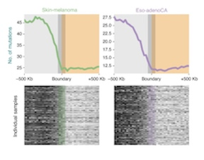
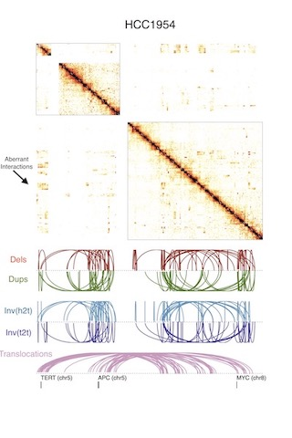
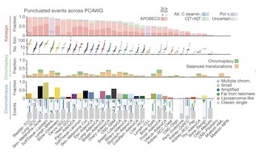
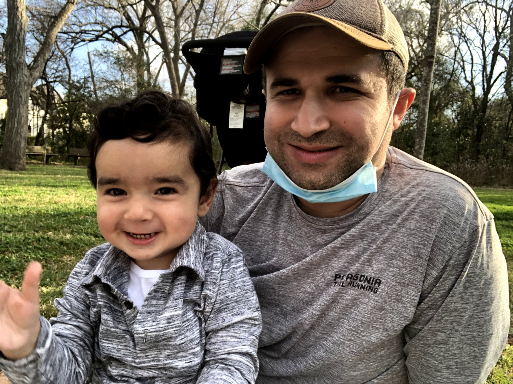

Akdemir Lab - Cancer Chromatin Biology
Our lab focuses on integrative computational analyses projects to advance efforts for precision cancer medicine. We are analyzing multi-omics datasets from primary human tumors such as long-read whole genome sequencing, genome-wide chromatin organization (Hi-C) and single-cell ATAC-sequencing from common (i.e. glioblastoma) or rare (i.e. chordoma) CNS tumor types to investigate how tumor evolution shapes the organization of chromatin in cancer cells and tumor microenvironment.
The lab is based in the Department of Neurosurgery at the MD Anderson Cancer Center. To learn more about the goals of the lab, please check out the research and publication pages.
The Akdemir lab is part of several international scientific organizations such the International Cancer Genome Consortium (ICGC-PCWAG), NIH Common 4D Nucleome program, the BreakThrough Cancer Foundation. We are also part of some institutional research efforts such the MD Anderson GBM Moonshot efforts as well as NCI-MD Anderson Brain Cancer SPORE team.
Prospective graduate students, rotation students and postdoctoral fellows are encouraged to get in touch with Kadir.
Research
The three billion base pairs of the human genome, if stretched out linearly, would exceed 2 meters in length. Remarkably, this amount of DNA is packaged inside of a nucleus that is 5-10 micrometers wide in diameter. The compaction of the genome in the nucleus is non-random. Recent evidence has indicated that a critical feature of genome organization is that regions of the genome form self-associated domain structures on a megabase scale1. These structures are generally known as topologically associated domains (TADs) and have been demonstrated to play a critical role in facilitating proper gene regulation. Our recent studies revealed that the integration of the TAD organization with cancer genomic datasets provides unique insights into the mechanisms and functional consequences of somatic alterations observed in human tumors.
In our lab, we focus on the development and application of algorithms that analyze and interpret multi-omics data from individual patients for prospective clinical uses. Broadly, we strive to gain a better understanding of mutations (somatic and germline) in cancer cells which will enable new translational inventions and accelerate development of clinical interventions.
Elucidating the functional consequences of complex genomic alterations
Cancer genomes are predominantly restructured due to somatically-acquired, catastrophic rearrangements. However, our ability to determine the clinical implications of these complex rearrangements in cancer genomes remains limited. We develop novel computational methods to utilize chromatin organization information for analyzing the rearranged chromosomes, and elicit information about the altered gene regulatory landscapes that result from these complex rearrangements. We apply these methods to investigate the potential clinical implications of altered chromosomes in human brain tumors, cancer types which exhibit the highest number of complex genomic rearrangements among human malignancies.
Investigating the influence of epigenome on mutational processes
Somatic mutations arise during the life of a cell and in the generation of its progeny. Accumulation of mutations can lead to age-related diseases, and those occurring in cancer driver genes may ultimately lead to tumorigenesis and the development of clinically detectable disease. However, the spatio-temporal processes that direct mutation rates throughout cancer evolution are not fully understood. The hierarchical folding of genomic DNA within the nucleus is intimately linked with transcriptional regulation and DNA replication. We investigate the effects of three-dimensional genome organization on the distribution of somatic mutations in human cancers with the aim of elucidating the potential role of genome folding on DNA damage and repair processes.
Developing computational methods for integrative analysis of large genomic datasets
Our lab is involved multiple genomic characterization efforts involving generation of multi-omics datasets from patients with different tumor types or exhibiting a spectrum of clinical responses. Therefore, a key research are in the lab is to develop computational tools to mine and visualize diverse genomic assay outputs in order to expand our understanding of how different molecular processes are involved in tumor initiation, progression and response to cancer therapies.
Joining the lab
We are actively seeking motivated and talented members to join our team. We strive to provide excellent training across a wide range of computational and experimental approaches.
Postdoctoral fellows
The Akdemir Lab is hiring multiple postdoctoral fellows - starting salary ($75K + benefits). More information here .Our lab aims to understand how three-dimensional chromatin organization influences somatic mutation occurrence during tumor evolution. To achieve these goals we generate three-dimensional chromatin organization (Hi-C), long-read sequencing whole-genome (Oxford-Nanopore) and single-cell chromatin accessibility (scATAC-Seq) techniques to reveal how genome architecture is altered by genomic rearrangements aberrations in primary tumor samples. Related projects and responsibilities will include:
- Studies of patient samples for tumor behavior and clinical outcomes.
- Studies of resistance to existing and emerging cancer therapies using patient-derived data.
- Apply or develop novel bioinformatics algorithms to interpret cancer genomic and epigenomic datasets.
- Grow your own research program and plan for the next stages of your career.
PhD students
We are part of the Graduate School of Biomedical Sciences (GBSB) program of the University of Texas Health Science Center at Houston. Students should apply to the graduate program and do not apply directly to labs. During the first year of a Ph.D. program, students rotate through ~3 labs prior to deciding on a thesis lab. Our lab is usually open for rotation students every quarter.Prospective and current graduate students are very welcome to get in touch with questions about the lab, although this is not required to gain admittance to the program.
Undergraduate and high school students
Please contact with Kadir regarding research positions open for undergraduate or high school students.We accept students through CPRIT-CURE Summer Undergraduate Program and the PCCSM program which is for STEM-oriented high school (junior and senior) and college students interested in biomedical careers, and first-year medical students. Our focus is on students/trainees who are under-represented in science and medicine.
Philosophy on Mentorship and Expectations
Contact
E-mail: kcakedemir@mdanderson.org
Twitter: @kcakdemir
Github: Akdemirlab
We're located in the Basic Science Research Building 5th Floor, UT MD Anderson Brain Tumor Center.
Selected Publications
You can find a current and complete list of publications on Google scholar.

Somatic mutation distributions in cancer genomes vary with three-dimensional chromatin structure (2020)
[Nature Genetics]
KC. Akdemir (co-corresponding), VT. Le, JM. Kim, S. Killcoyne, DA. King, Y. Lin, Y. Tian, A. Inoue, SB. Amin, FS. Robinson, M. Nimmakayalu, RE. Herrera, EJ. Lynn, K. Chan, S. Seth, LJ. Klimczak, M. Gerstung, DA. Gordenin, J. OBrien, L. Li, YL. Deribe, RG. Verhaak, PJ. Campbell, R. Fitzgerald, AJ. Morrison, JR. Dixon (co-corresponding), PA. Futreal (co-corresponding)

Disruption of chromatin folding domains by somatic genomic rearrangements in human cancer (2020)
[Nature Genetics]
KC. Akdemir, VT. Le, S. Chandran, Y. Li, RG. Verhaak, R Beroukhim, PJ. Campbell, L. Chin, JR. Dixon, PA. Futreal, PCAWG Structural Variation Working Group & PCAWG Consortium

Pan-cancer analysis of whole genomes (2020)
[Nature]
The ICGC/TCGA Pan-Cancer Analysis of Whole Genomes Consortium
News
Our lab received a UT Rising Stars Award!!!
We are hiring multiple postdoctoral fellows - starting salary ($75K + benefits). More information here .
[Open Positions]
Members

Kadir C. Akdemir (he/him)
Principal investigator [CV]kcakedemir@mdanderson.org
You? Learn more about joining the lab.